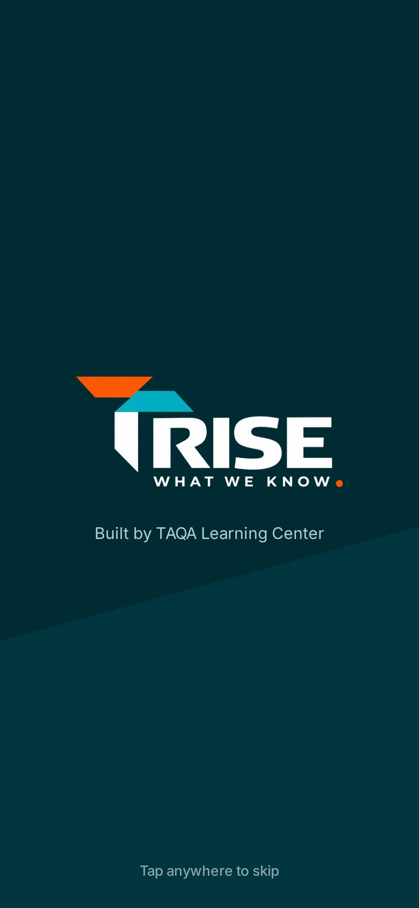
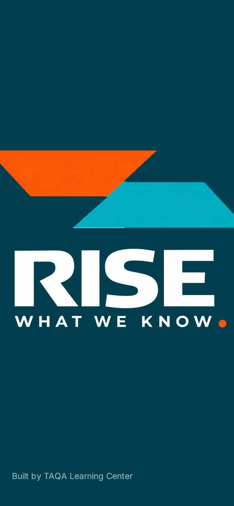

Option D
Beacon
RISE as a lit signal. The deep ink of the logo is the ground, and the logo's own colours are the only light on the screen.


Brand moment: the logo assembles
A full-screen entrance, 700 ms, once per session. The real logo file is cut into its six parts: the pillar rises, the cyan and orange bars slide in, the name settles and the orange full stop lands.
A tap skips it, and it never delays search. With reduced motion turned on, the finished logo simply appears.
On the phone
390 × 844 · open any screen to see the live mockup



Scaled to desktop
1440 × 900 · the same pages, with no separate desktop design


Colour
Type
Why it works
- The brand owns the first second. The symbol and WHAT WE KNOW. lock up on Home the way RISE sits beside the pillar in the logo. It is the strongest first impression of the three.
- The phone home has three things. Search (with QR scan for the code printed on a document), the critical alert and the document you were reading. The tab bar has four items.
- The dark ground is calm in control cabins and on night shifts. Cyan actions and the green and amber status colours stand out clearly on it.
- Desktop keeps the same composition. The cards move to a column on the right. Nothing new is invented for the larger screen.
Watch out for
- Dark screens are harder to read in direct sun on site. Outdoor use would need a light theme too, which doubles testing.
- Long procedures read on a light sheet, so the app changes ground between lists and documents.
Option E
Full Stop
Type does the work. One typeface on warm paper, with the orange full stop from WHAT WE KNOW. as the only accent in the whole product.


Brand moment: the full stop lands
There is no splash screen. When Home opens, WHAT, WE and KNOW rise into place one after another and the orange full stop drops in, 600 ms, once per session. The statement is the home screen itself, so there is nothing to wait for or skip.
BW Gradual's own full stop is square, so the round dot is drawn to match the logo.
On the phone
390 × 844 · open any screen to see the live mockup


Scaled to desktop
1440 × 900 · the same pages, with no separate desktop design


Colour
Type
Why it works
- These are the quietest screens of the three. No cards, no tiles and no icons in the tab bar. Status is a word plus a shape: a dot for Current and a diamond for Review due.
- The full stop becomes the interface's marker. It marks the active tab, unread notifications, area titles and critical alerts. People recognise the brand without any decoration.
- Search sits in the thumb zone at the bottom of the first screen, just under the one alert that matters.
- It reads like a publication, which suits controlled documents. Trust is stated in plain sentences rather than badges.
Watch out for
- The brand is mostly typographic, so it depends on BW Gradual loading. With a fallback font it loses much of its character.
- The first screen has the most open space of the three. Some people may read it as empty, and the logo colours appear only in the lockup.
Option F
Rise
The logo becomes the interface. The teal pillar is the header, the orange and cyan bars become colour tiles, and every tile carries the logo's 45° cut.


Brand moment: the screen rises
The teal pillar fills the screen from the bottom, the bars land across the top and the name settles, 700 ms, once per session. The whole screen becomes the logo.
In the product, the teal band then shrinks to become the header on Home, so the entrance leads straight into the app.
On the phone
390 × 844 · open any screen to see the live mockup



Scaled to desktop
1440 × 900 · the same pages, with no separate desktop design


Colour, each with one job
Type and shape
Why it works
- It has the most recognisable brand of the three. The 45° cut, the colour blocks and the teal band are on every screen, even when the logo has scrolled away.
- Big targets for gloved hands. Every tile is at least 104 px tall on the phone. On the area screen you pick a shelf before you see a list.
- Each colour has a job. Orange means an alert, cyan means action or selection, teal is navigation and help, and white is content. Status keeps its own green.
- On desktop the pillar becomes the rail, so the brand frames every page without a hero image.
Watch out for
- Colour blocks are loud. The rule that orange means an alert has to be held strictly, or alerts lose their urgency.
- Tiles show fewer documents per screen. QMS and auditor roles will need a denser list view behind them.
Side by side
| D · Beacon | E · Full Stop | F · Rise | |
|---|---|---|---|
| Ground | Dark logo ink | Warm paper | Light grey under a teal band |
| Brand moment | The logo assembles, full screen, 700 ms | The statement builds on Home, 600 ms | The screen rises into the logo, 700 ms |
| How the logo is used | The symbol is locked up with WHAT WE KNOW. | Lockup only. The full stop appears everywhere. | Its shapes become the interface |
| Phone home | Statement, search, alert, Continue reading | Statement, alert, search | Search, then four tiles |
| Phone navigation | Four icon tabs. A cyan bar marks the active one. | Four word tabs. The full stop marks the active one. | Four icon tabs. A chamfered cyan marker shows the active one. |
| On desktop | Same hero, with cards in a right column | Statement on the left, index on the right | The pillar becomes the left rail |
| Best for | Control cabins, night shifts and a strong first impression | Reading and trust, in a calm and premium way | Gloved field use and the strongest brand recall |
| Main risk | Hard to read in direct sun | Can feel too empty | Needs strict colour discipline |
What I need from you
Choose D, E or F, or name a mix, such as E's typography with D's entrance. I haven't made a recommendation this round, because you asked to keep exploring.
Once a direction is picked, I'll take it through Upload, the QMS workspace and the full viewer at the same phone-first density.
These are static mockups on the design/rise-exploration branch. No app page, stylesheet or test was touched.